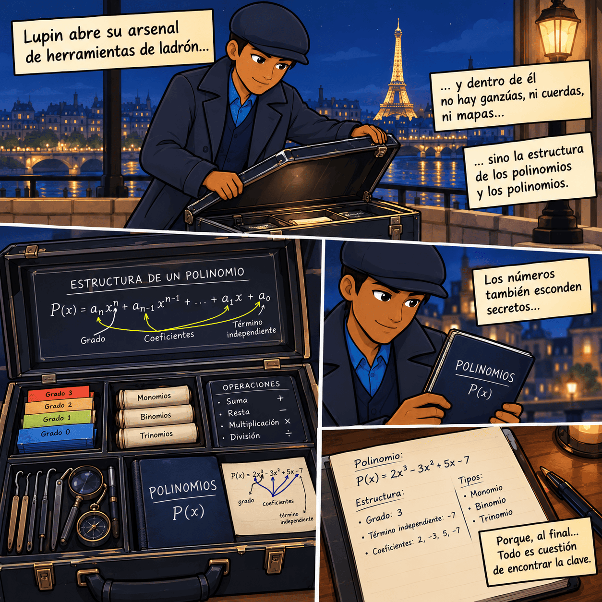
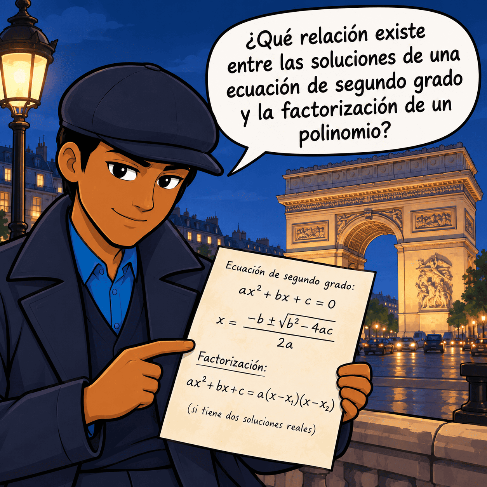
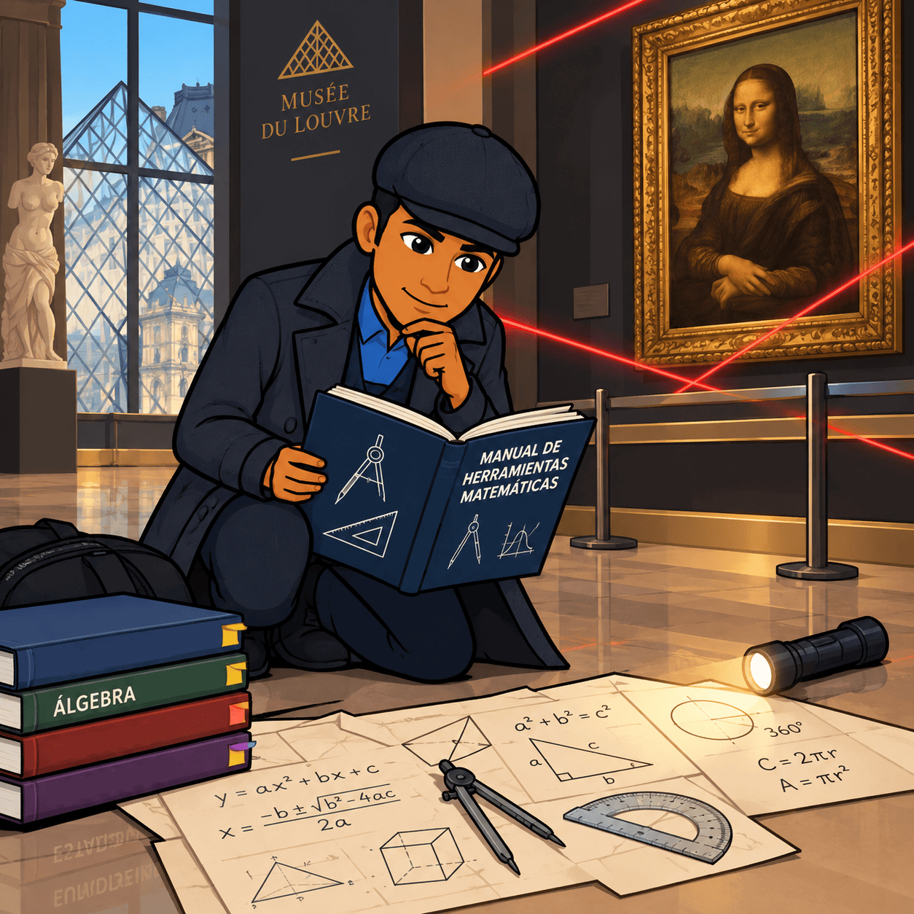
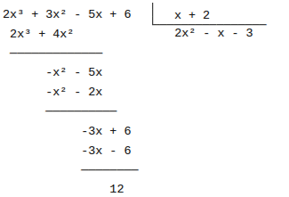
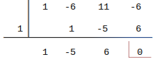
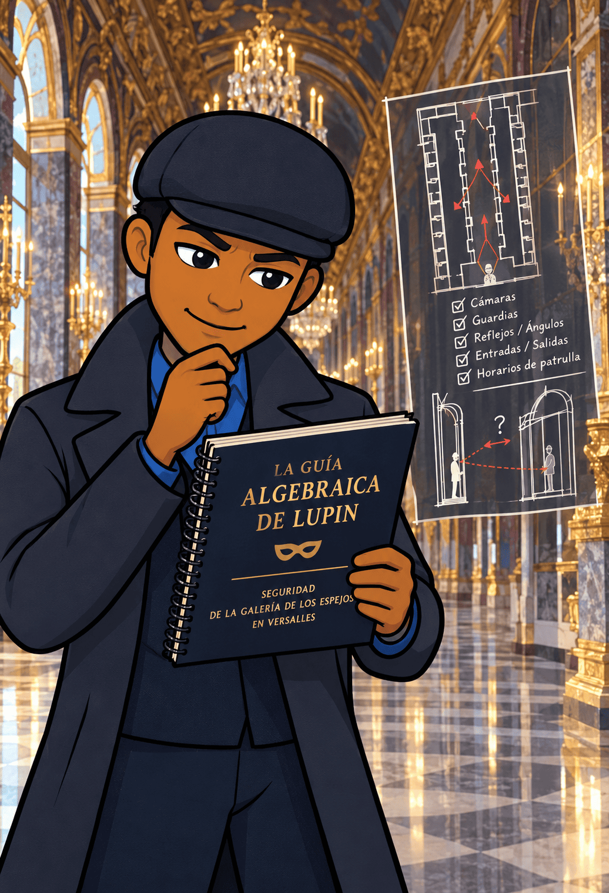

Fase 1: Motivar
📖 El comienzo del caso
París. 21:17 h.
Una caja fuerte acaba de ser abierta sin que nadie haya encontrado señales de fuerza.
Dentro había un mensaje:
«Para encontrar lo que buscas, primero tendrás que dominar el lenguaje de los números.»
La policía cree que se trata de una simple amenaza.
Pero Lupin sabe que no es así.
El mensaje contiene una serie de expresiones algebraicas, ecuaciones y polinomios.
Cada resultado correcto proporciona una pista.
Cada error nos aleja del objetivo.
Lupin necesita un equipo capaz de interpretar las pistas.
Ese equipo sois vosotros.
Durante esta misión aprenderéis a trabajar con polinomios y ecuaciones para descifrar el caso.
Al final, tendréis que demostrar que sois capaces de resolverlo sin ayuda.
🎯 Nuestra misión
En esta situación de aprendizaje aprenderás a:
- reconocer y trabajar con polinomios;
- operar con polinomios;
- dividir polinomios y utilizar la regla de Ruffini;
- factorizar polinomios;
- encontrar raíces y utilizar el teorema del resto;
- calcular el MCD y el mcm de polinomios;
- resolver ecuaciones de primer grado;
- resolver ecuaciones de segundo grado;
- resolver ecuaciones bicuadradas;
- utilizar las relaciones de Cardano-Vieta.
Tu objetivo será pensar como Lupin: observar, relacionar, comprobar y actuar.
Fase 2: Activar
¿Qué sabes ya?
Antes de comenzar la investigación, Lupin necesita comprobar qué herramientas matemáticas tienes.
Responde mentalmente o en tu cuaderno:
- ¿Qué es un monomio?
- ¿Qué diferencia hay entre un monomio y un polinomio?
- ¿Qué significa el grado de un polinomio?
- ¿Cómo se suman dos polinomios?
- ¿Qué significa resolver una ecuación?
- ¿Qué diferencia hay entre una ecuación de primer grado y una de segundo grado?
- ¿Qué significa que un número sea raíz de un polinomio?
🗝️ Una primera pista
Observa:
\(P(x)=3x^2-5x+7\)
Identifica:
- grado;
- coeficiente principal;
- término independiente;
- coeficiente de \(x\);
- número de términos.
Solución:
\(P(x)=3x^2-5x+7\)
- Grado: \(2\)
- Coeficiente principal: \(3\)
- Término independiente: \(7\)
- Coeficiente de \(x\): \(-5\)
- Tiene tres términos.
Primera herramienta recuperada: reconocer la estructura de un polinomio.

Fase 3: Explorar
El mensaje oculto
Lupin encuentra una nota:
\(2x^2+3x-5=0\)
Debajo aparece escrito:
«No basta con encontrar un resultado. Hay que saber por qué funciona.»
Intentamos resolverla.
\(2x^2+3x-5=0\)
Aplicamos la fórmula:
\(ax^2+bx+c=0\)
\(x=\dfrac{-b\pm\sqrt{b^2-4ac}}{2a}\)
Como:
\(a=2,\qquad b=3,\qquad c=-5\)
tenemos:
\(x=\dfrac{-3\pm\sqrt{9+40}}{4}\)
\(x=\dfrac{-3\pm7}{4}\)
Por tanto:
- \(x_1=1\)
- \(x_2=-\frac52\)
🕵️ Pregunta de Lupin
¿Qué relación existe entre las soluciones de una ecuación de segundo grado y la factorización de un polinomio?
Esta pregunta será importante durante toda la investigación.

Fase 4: Estructurar
Esta es la parte principal de nuestra investigación.
Lupin no memoriza las herramientas: las conoce, sabe cuándo utilizarlas y comprueba sus resultados.
Nosotros haremos lo mismo.

1. Identificación de los elementos de un polinomio
Consideramos:
\(P(x)=8x^4-3x^2+7x-5\)
Elementos principales:
- Grado: \(4\)
- Coeficiente principal: \(8\)
- Término independiente: \(-5\)
- Coeficientes: \(8,\ 0,\ -3,\ 7,\ -5\)
El término \(x^3\) no aparece, por lo que su coeficiente es \(0\).
➕ 2. Suma de polinomios
Calcula:
\(P(x)=3x^3-2x^2+5x-1\)
\(Q(x)=x^3+4x^2-2x+6\)
Sumamos términos semejantes:
\(P(x)+Q(x) =\)
\(=(3x^3+x^3)+(-2x^2+4x^2)+(5x-2x)+(-1+6)=\)
\( = \boxed{4x^3+2x^2+3x+5} \)
➖ 3. Resta de polinomios
\(P(x)=5x^3-3x^2+2x-4\)
\(Q(x)=2x^3+x^2-5x+1\)
Entonces:
\(P(x)−Q(x)=\)
\(=5x^3-3x^2+2x-4-(2x^3+x^2-5x+1)=\)
Cambiamos los signos:
\(=5x^3-3x^2+2x-4-2x^3-x^2+5x-1=\)
\( = \boxed{3x^3-4x^2+7x-5}\)
Regla de Lupin: cuidado con los signos cuando aparece un paréntesis precedido por un menos.
✖️ 4. Multiplicación de polinomios
Calcula:
\((2x+3)(x^2-4x+5)=\)
Multiplicamos cada término:
\(=2x(x^2-4x+5)+3(x^2-4x+5) =\)
\(=2x^3-8x^2+10x+3x^2-12x+15 =\)
Reducimos:
\( = \boxed{2x^3-5x^2-2x+15}\)
➗ 4.5. División de polinomios
Divide:
\((2x^3+3x^2-5x+6):(x+2)\)

Cociente:
\(\boxed{2x^2-x-3}\)
con resto:
\(\boxed{12}\)
Por tanto:
\(\boxed{P(x)=(x+2)(2x^2-x-3)+12} \)
🕵️ 6. Regla de Ruffini
Calcula:
\(P(x)=x^3-6x^2+11x-6\) entre \(x-1\)
Probamos como la división es entre \(x-1\) entoces usamos \(x=1\) y por tanto la división por Ruffini sería:

El resto es \(0\).Por tanto: \(x=1\) es una raíz.
El cociente es: \(x^2-5x+6\)
Factorizamos:
\(x^2-5x+6=(x-2)(x-3)\)
Así:
\(\boxed{P(x)=(x-1)(x-2)(x-3)}\)
Las raíces son:
\(\boxed{1,\ 2,\ 3} \)
🎯 7. Teorema del resto
El teorema del resto dice:
Al dividir \(P(x)\) entre \(x-a\), el resto es \(P(a)\).
Ejemplo:
\(P(x)=2x^3-x^2+3x-4\)
Queremos conocer el resto al dividir entre:
\(x-2\)
Calculamos:
\(P(2)=2(2)^3-(2)^2+3(2)-4 =16−4+6−4= \boxed{14}\)
Por tanto, el resto es:
\(\boxed{14}\)
🌱 8. Raíces de un polinomio
Un número \(a\) es raíz de \(P(x)\) si:
\(P(a)=0\)
Ejemplo:
\(P(x)=x^2-5x+6\)
Comprobamos:
\(P(2)=4-10+6=0\)
Por tanto:
\(\boxed{2\text{ es raíz}}\)
También:
\(P(3)=9-15+6=0\)
Así que:
\(\boxed{3\text{ es raíz}} \)
🕵️ 9. Factorización de polinomios
Factoriza:
\(P(x)=x^2-5x+6\)
Buscamos dos números cuyo producto sea \(6\) y cuya suma sea \(-5\):
\(-2\cdot(-3)=6\)
\(−2+(−3)=−5\)
Por tanto:
\(\boxed{x^2-5x+6=(x-2)(x-3)} \)
🔗 10. MCD de polinomios
Sean:
\(P(x)=x^3-4x^2+4x\)
\(Q(x)=x^2-4x+4\)
Factorizamos:
\(P(x)=x(x-2)^2\)
\(Q(x)=(x-2)^2\)
El MCD está formado por los factores comunes con el menor exponente:
\(\boxed{MCD(P,Q)=(x-2)^2} \)
🔗 4.11. mcm de polinomios
Con los mismos polinomios:
\(P(x)=x(x-2)^2\)
\(Q(x)=(x-2)^2\)
El mcm contiene todos los factores con el mayor exponente:
\(\boxed{mcm(P,Q)=x(x-2)^2}\)
Recuerda:
- MCD → factores comunes con menor exponente.
- mcm → todos los factores con mayor exponente.
⚖️ 12. Ecuaciones de primer grado
Con paréntesis
Resuelve:
\((x-2)+4=2x+7\)
Desarrollamos:
\(3x-6+4=2x+7\)
\(3x-2=2x+7\)
\(x=9\)
Por tanto:
\(\boxed{x=9} \)
Con varios paréntesis
\(2(x−3)−3(x+1)=5\)
\(2x−6−3x−3=5\)
\(−x−9=5\)
\(−x=14\)
\(\boxed{x=-14} \)
⚖️ 13. Ecuaciones de primer grado con fracciones
Resuelve:
\(\frac{x}{3}+\frac{x-2}{4}=5\)
El mínimo común múltiplo de \(3\) y \(4\) es \(12\).
Multiplicamos toda la ecuación por \(12\):
\(4x+3(x−2)=60\)
\( 4x+3x−6=60\)
\(7x=66\)
\(\boxed{x=\frac{66}{7}} \)
⚖️ 14. Ecuaciones de segundo grado completas
Resuelve:
\(2x^2-5x-3=0\)
Identificamos:
\(a=2,\quad b=-5,\quad c=-3\)
Aplicamos:
\(x=\dfrac{-b\pm\sqrt{b^2-4ac}}{2a}\)
\(x=\dfrac{5\pm\sqrt{25+24}}{4}\)
\(x=\dfrac{5\pm7}{4}\)
Por tanto:
\(\boxed{x_1=3}\)
\(\boxed{x_2=-\frac12}\)
⚖️ 15. Ecuaciones de segundo grado incompletas
Tipo \(ax^2+bx=0\)
\(x^2-5x=0\)
Sacamos factor común:
\(0x(x-5)=0\)
Por tanto:
\( \boxed{x=0}\) o \(\boxed{x=5} \)
Tipo \(ax^2+c=0\)
\(x^2-16=0\)
\(x^2=16\)
\(\boxed{x=\pm4}\)
⚖️ 16. Ecuaciones bicuadradas
Resuelve:
\(x^4-5x^2+4=0\)
Hacemos:
\(y=x^2\)
Entonces:
\(y^2-5y+4=0\)
Factorizamos:
\((y-1)(y-4)=0\)
Por tanto:
\(y=1\) o \(y=4\)
Volvemos a \(x\):
\(x^2=1\)
\(x=\pm1\)
Y:
\(x^2=4\)
\(x=\pm2\)
Soluciones:
\(\boxed{x=-2,-1,1,2} \)
🧠 17. Cardano-Vieta
Para una ecuación:
\(ax^2+bx+c=0\)
si sus soluciones son \(x_1\) y \(x_2\):
\(\boxed{x_1+x_2=-\frac ba}\) y \(\boxed{x_1x_2=\frac ca}\)
Ejemplo
\(x^2-7x+3=0\)
Tenemos:
\(a=2,\quad b=-7,\quad c=3\)
Entonces:
\(x_1+x_2=\frac72\)
y:
\(x_1x_2=\frac32\)
Buscamos dos números que cumplan ambas condiciones:
\(3+\frac12=\frac72\)
\(3\cdot\frac12=\frac32\)
Por tanto:
\(\boxed{x_1=3,\qquad x_2=\frac12}\)
La estrategia de Lupin: cuando conoces las condiciones adecuadas, no siempre necesitas utilizar el camino más largo.
🕵️ 18. La conexión final: polinomios y ecuaciones
Observa:
\(2x^2-7x+3=0\)
Resolver esta ecuación significa encontrar las raíces del polinomio:
\(P(x)=2x^2-7x+3\)
Como sus raíces son:
\(3,\frac12\)
podemos escribir:
\(P(x)=2(x-3)\left(x-\frac12\right)\)
o equivalentemente:
\(\boxed{P(x)=(x-3)(2x-1)}\)
Esta es una de las ideas fundamentales de la investigación:
resolver una ecuación polinómica consiste en encontrar las raíces del polinomio asociado.
Fase 5: Aplicar
Ahora comienza la parte práctica de la misión.
Lupin ya te ha enseñado las herramientas. Ha llegado el momento de utilizarlas de forma autónoma.
🕵️ RETO 1. SIMULACRO
Tendrás que enfrentarte a un simulacro de la misión final, es decir, un simulacro de examen.
El objetivo no será únicamente obtener resultados correctos. Tendrás que demostrar que sabes:
- elegir el procedimiento adecuado;
- organizar los cálculos;
- justificar los pasos;
- comprobar tus soluciones;
- detectar y corregir errores.
No olvides: un buen detective no se limita a encontrar una respuesta. Explica cómo ha llegado hasta ella.
(El simulacro será proporcionado por el profesor.)
🎲 RETO 2. JUEGO MATEMÁTICO
Ha llegado el momento de poner a prueba tus habilidades.
Te enfrentarás a un desafío matemático en el que tendrás que utilizar los contenidos aprendidos durante la investigación, se trata de un juego matemático.
Recuerda las reglas de Lupin:
Observa → piensa → calcula → comprueba → decide.
No gana quien calcula más rápido.
Gana quien sabe qué estrategia utilizar y puede justificarla.
(El juego matemático será propuesto por el profesor.)
🎨 RETO 3. LA GUÍA ALGEBRAICA DE LUPIN
Ahora tendrás que crear tu propia infografía-resumen.
La infografía debe servir para que otro estudiante pueda repasar los contenidos de la situación de aprendizaje.
Debe incluir, como mínimo:
- Polinomios
- elementos principales;
- suma y resta;
- multiplicación;
- división;
- Ruffini;
- teorema del resto;
- raíces;
- factorización;
- MCD y mcm.
- Ecuaciones de primer grado
- procedimientos básicos;
- paréntesis;
- fracciones.
- Ecuaciones de segundo grado
- completas;
- incompletas;
- fórmula general;
- bicuadradas;
- Cardano-Vieta.
🎙️ La infografía tendrá voz
La infografía deberá estar audiodescrita con tu propia voz, mediante vídeo (no hace falta que aparezcas en él, pero sí que se oiga tu voz nítidamente) o audio.
No se trata simplemente de leer las fórmulas.
Debes explicar:
qué significa cada procedimiento, cuándo se utiliza y cómo se aplica.
Por ejemplo:
«Para resolver una ecuación de segundo grado completa identificamos primero los coeficientes \(a\), \(b\) y \(c\). Después calculamos el discriminante y aplicamos la fórmula general...»
Tu explicación debe permitir que otra persona pueda estudiar utilizando tu infografía.

Ecuaciones y Álgebra: La historia que JAMÁS te contaron
¿Pensabas que las ecuaciones eran solo letras y números aburridos que aparecieron en tu libro de texto? Este vídeo te demuestra que detrás de cada fórmula hay una historia digna de una película.
Viajaremos desde las antiguas civilizaciones de Babilonia, China e India, que resolvían problemas usando únicamente palabras, hasta el mundo islámico, donde Al-Juarismi dio origen al concepto de álgebra. Pero el plato fuerte llega en el Renacimiento europeo, una época obsesionada con encontrar fórmulas generales. Verás un mundo lleno de pasión, duelos matemáticos y traiciones, como el célebre enfrentamiento entre Tartaglia y Cardano por el secreto de la ecuación de tercer grado.
Además, descubrirás cómo se inventaron los símbolos que usas hoy en clase: desde el signo igual de Robert Recorde hasta las incógnitas X, Y, Z de René Descartes. Finalmente, el vídeo te llevará hasta los límites del álgebra con genios como Évariste Galois, quien revolucionó las matemáticas la noche antes de morir en un duelo a los 20 años.
Si quieres descubrir por qué las matemáticas no son solo reglas, sino una fascinante aventura llena de secretos, ¡prepárate para ver las ecuaciones con otros ojos!
Fase 6: Concluir
🕵️ EL ÚLTIMO GOLPE
La investigación llega a su final.
Has aprendido a trabajar con polinomios y ecuaciones. Ahora tendrás que demostrar de forma individual que puedes utilizar estas herramientas.
Prueba final
Realizarás un examen individual sobre los contenidos trabajados:
- polinomios;
- operaciones;
- división;
- Ruffini;
- raíces y teorema del resto;
- factorización;
- MCD y mcm;
- ecuaciones de primer grado;
- ecuaciones de segundo grado;
- ecuaciones bicuadradas;
- ecuaciones de Cardano-Vieta.
Entrega final
Además del examen, entregarás:
🎨 Tu infografía algebraica audiodescrita.
Antes de entregarla, comprueba:
- ¿He incluido todos los contenidos importantes?
- ¿Las fórmulas son correctas?
- ¿He incluido ejemplos?
- ¿Los procedimientos están explicados?
- ¿Se entiende cuándo utilizar cada método?
- ¿He comprobado mis resultados?
- ¿La infografía está organizada?
- ¿La explicación de audio es clara?
¿La audiodescripción está realizada con mi propia voz?
EPÍLOGO: EL CASO ESTÁ RESUELTO
París. 23:48 h.
Lupin observa desde lejos cómo la policía llega al lugar.
El último mensaje aparece en la pantalla:
«Las mejores soluciones no son las que parecen más complicadas. Son las que utilizan la herramienta adecuada en el momento adecuado.»
Lupin sonríe.
El caso está cerrado.
Pero antes de marcharse deja una última nota:
«Ahora el protagonista eres tú.»